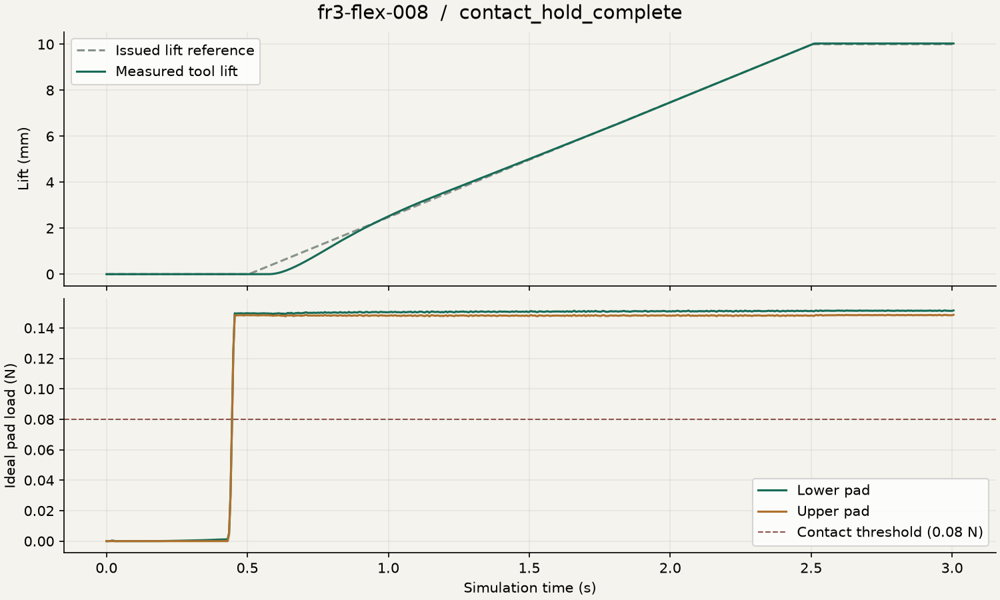
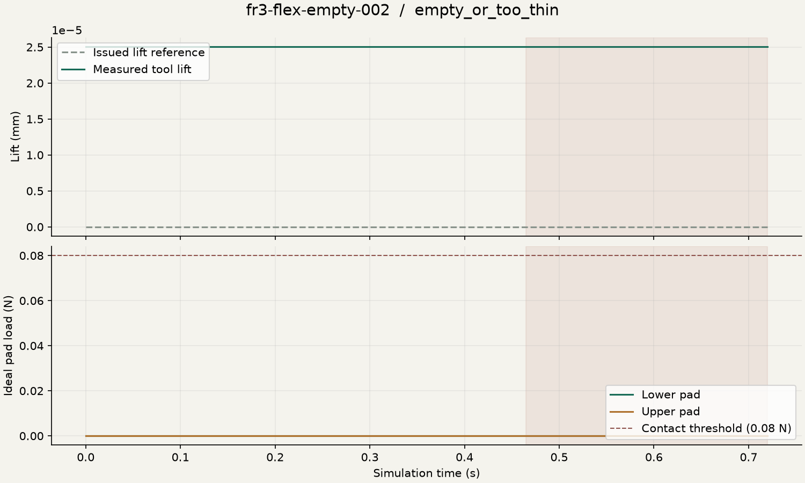
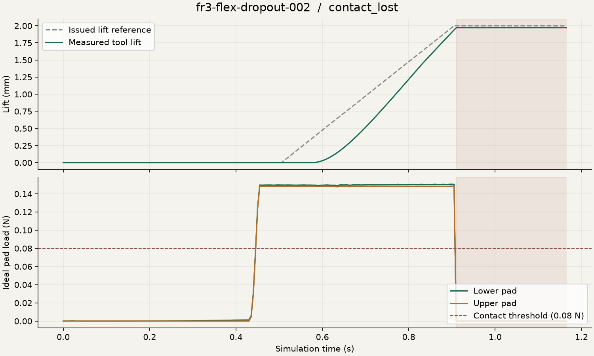
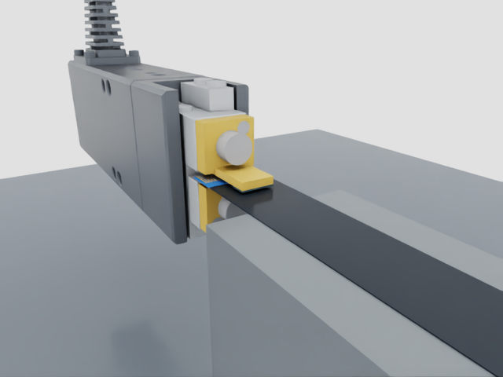
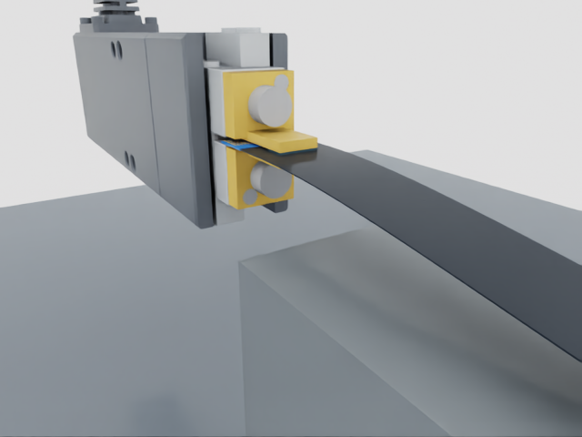

Run library · Ribbon cable assembly
← Project homeResearch archive / 29 September 2026
Watch it. Open it. Inspect it.
Recorded experiments, native USD timelines and sensor-only episode files. The archive covers the local bench and the separate FR3-mounted presented-cable lift. It does not demonstrate desk pickup or PCB insertion.
Read the maintained learning and simulation plan →
Inside the socket entrance
Supplier-family geometry, tapered guides and individual spring-supported contacts. Compare entry and retraction trials, including rejected collision models. This is a local socket fixture; board registration and seating remain unverified.
Watch the socket contact trials →
FR3 mounted lift · nominal checks passed
The arm closed the compact gripper on a presented cable, lifted it 10.032 mm and held bilateral contact. The matched empty case issued no lift. Injected feedback loss latched a stop with 1.65 µm of additional measured tool travel over 0.25 seconds. These are three trials on one configuration, not a reliability estimate.
Independent suite checks · Methods and modelling limits
Lift and hold
Pad and encoder feedback control the movement. The cable is free to deform; there is no grasp attachment. Cameras inspect the run but do not control it.
Measured lift and pad-load traces

Empty grasp
The controller rejects the empty or too-thin grasp. Zero lift is commanded.
Measured lift and pad-load traces

Feedback loss
The arm target freezes at measured joint angles when feedback is lost. Measured drift is reported separately from the command.
Measured lift and pad-load traces

Download the positive source/asset rerun bundle. It includes frozen code, CAD, robot assets, a runtime build recipe and launcher. Physics replay is separate from recorded-state playback; the positive bundle's fresh rerun remains pending.
Earlier failures and reproduction evidence
We keep the runs that led to the correction. Convex pad meshes reported premature contact; lowering the cooking thickness floor did not fix it. Exact CAD-sized analytic boxes removed that error. The arm then held contact but stopped short; disabling sleep did not fix this either. Bounded encoder-error integration brought it within tolerance while retaining the model's joint friction.
Failed-run source/asset bundle · Isolated rerun comparison. All 115 command, joint-angle and pad-load samples match exactly on the installed runtime. That result does not establish bitwise reproducibility across GPUs or drivers.
Three ways to inspect a run
Video shows the original rendered trial. USD replay plays recorded cable and tool poses with physics disabled. Episode JSON contains ideal pad feedback, encoder-equivalent measurements and commands, with timestamps. Camera observations are absent; the montage is not a synchronized vision-training stream.
Download a USDZ, open it in Isaac Sim, and use the timeline to play or scrub. The positive run was opened and rendered at its start and end in Isaac 6.1.0. All available recorded cable samples were checked against the packaged USD transforms. Mounted positive and failed replays were also opened and rendered in Isaac. Source/asset rerun bundles are available below; one failed-run bundle reproduced the original trace exactly on the installed runtime. Fresh runtime builds and a positive physics repeat remain pending.
Presented cable · lift and hold
The local tool lifted about 10 mm. Contact dynamics and material properties remain exploratory.
flex-pinch-001 · 73 cable frames checked
Empty jaws · rejected
The controller rejected an empty or too-thin grasp and issued no lift.
flex-empty-001 · Tool timeline only; no cable present
Lost feedback · stopped
Injected pad-feedback loss froze the lift reference at 2 mm.
flex-dropout-001 · 28 cable frames checked
Playback checked in Isaac
Start and end of the positive bench replay, rendered from the packaged timeline. This check advances recorded state, not physics.


What comes next
Held-end inspection preparation and retained failure review →
Next is calibrated held-end camera inspection and broader mechanics/stop tests. Sensor-guided alignment is the first planned learned motion skill. Imitation learning precedes contact RL; frozen evaluation scenes remain separate from training.
Calibrated camera episodes, broader motion evaluation, fresh runtime builds and parallel-training resource profiling remain pending. The library retains the earlier mounted failures.